Sistema Auditivo Humano
1) (Questão Obrigatória, Já fazendo parte da P2, isto é, quem não entregar esta, não terá as outras corrigidas nem incluídas na nota) Grave com o Audacity(ou outro programa) com sua própria voz, os seguintes CINCO(05) roteiros de arquivos, salvos no formato .wav:
a) BrunoSanchesRodrigues.wav
b) RA11201721076.wav
c) RA11201721076_pares.wav
d) Burrinho_BrunoRodrigues.wav
e) Camoes_BrunoRodrigues.wav
2. O que são o pitch e fundamental f0? Usando a forma de onda e o espectrograma do Audacity, encontre um pitch no seu Nome e uma f0 no seu sobrenome, usando o arquivo 1.a anterior, imprima a imagem usada e destaque suas respostas na imagem, indicando de qual fonema está efetuando cada medição (*).
Encontrando o Pitch no nome, na vogal 'o' da palavra 'Bruno':
 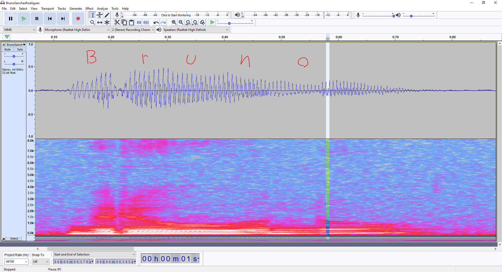
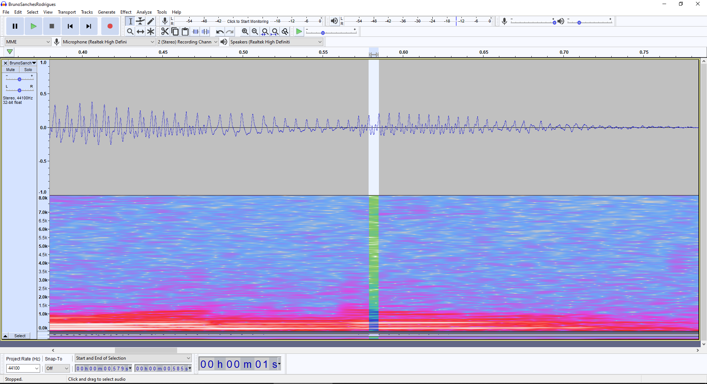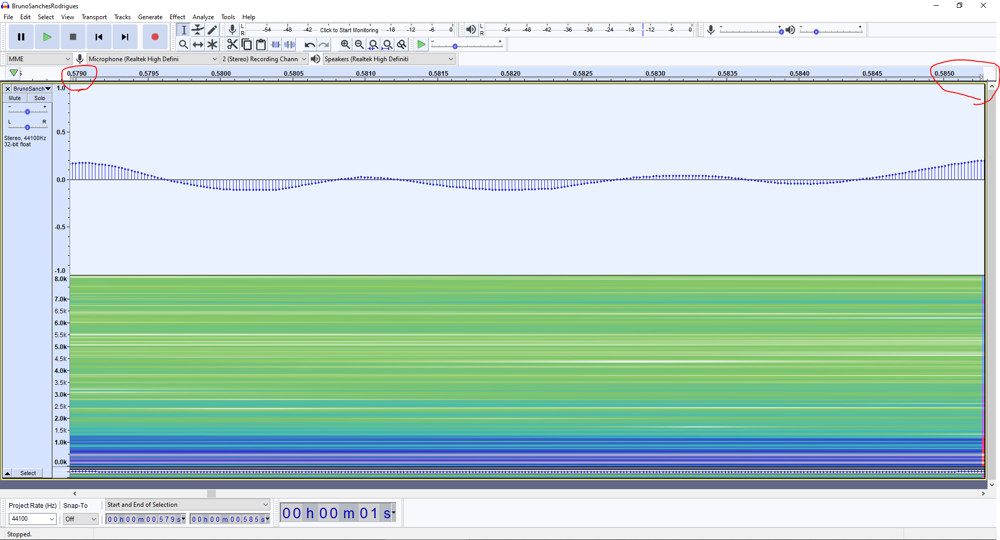
T0 = 0.5853 - 0.5790 = 0.0063 s
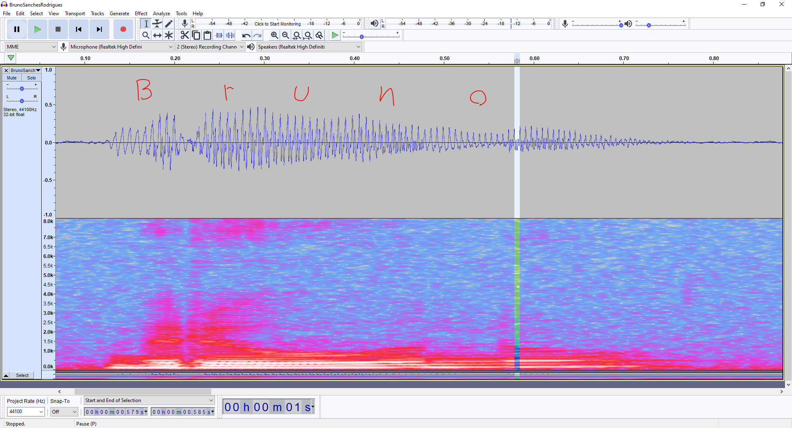
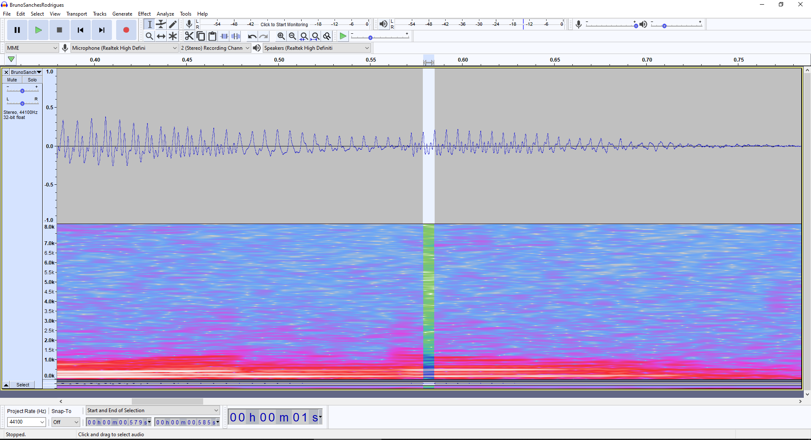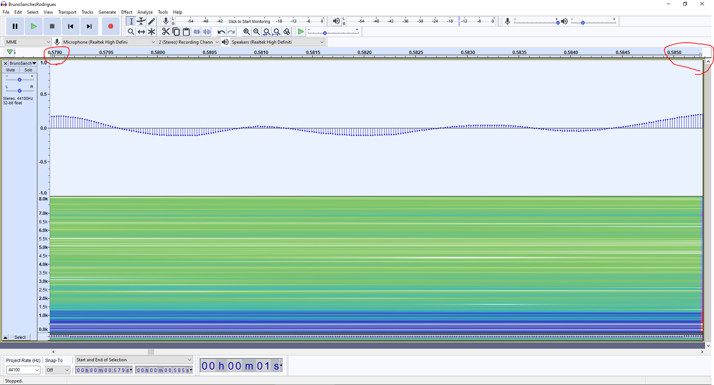
T0 = 0.5853 - 0.5790 = 0.0063 s
Período de Pitch = 6.3 ms
f0 = 1/0.0063 =~ 159 Hz
Encontrando uma f0 no sobrenome, na vogal 'i' da palavra 'Rodrigues':
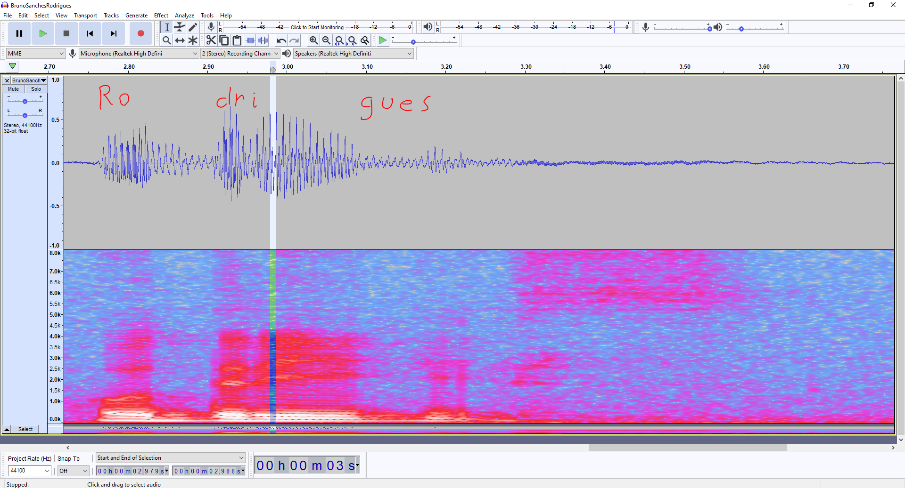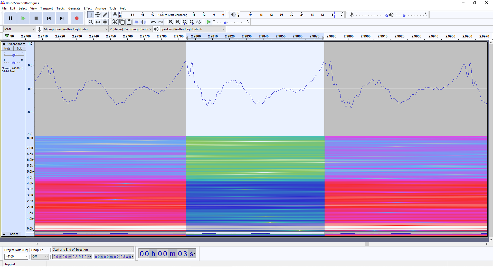
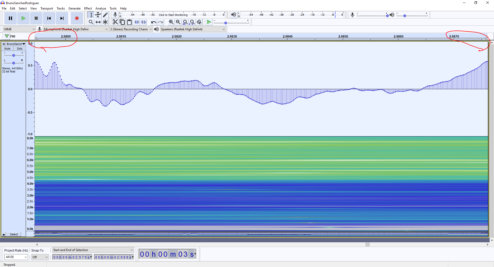
T0 = 2.9875 - 2.9795 = 0.008 s
Período de Pitch = 8.0 ms
f0 = 1/0.008 = 125 Hz
4. O que são as formantes f1a f4? Usando dois números diferentes dentro do arquivo 1.b anterior, usando o espectrograma ou o espectro, determine as formantes de duas vogais diferentes, imprimindo e destacando na imagem estes valores (*).
Número 'Um', vogal 'u':
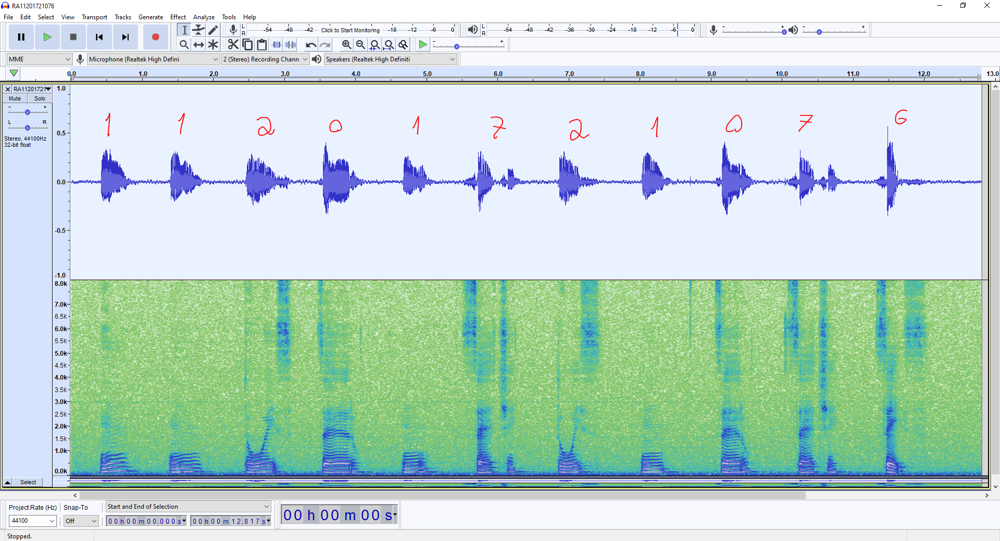
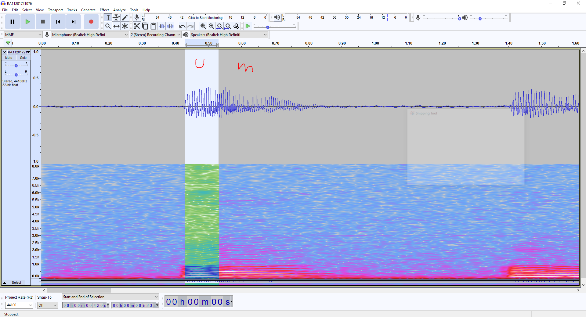
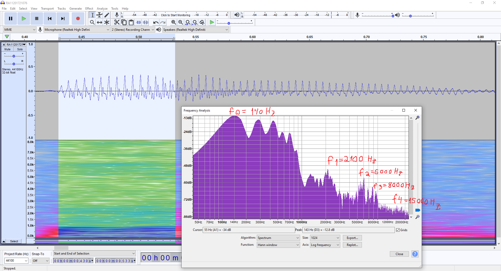
Número 'Sete', primeira vogal 'e':
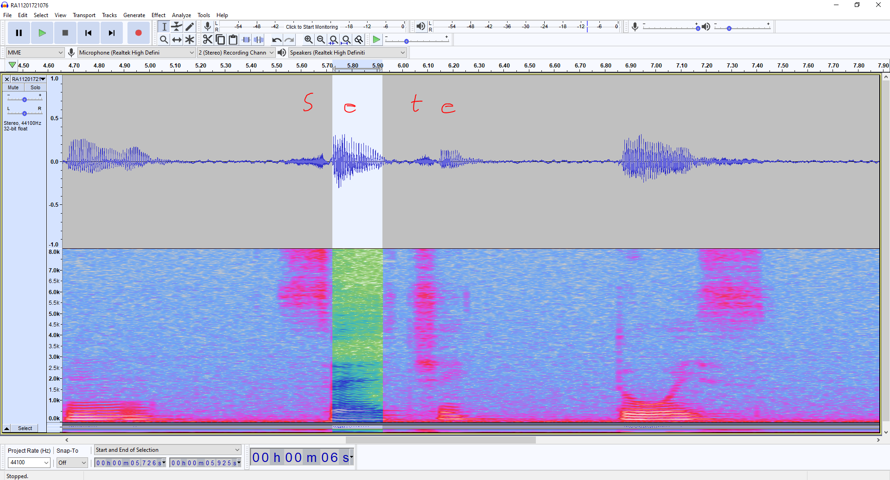
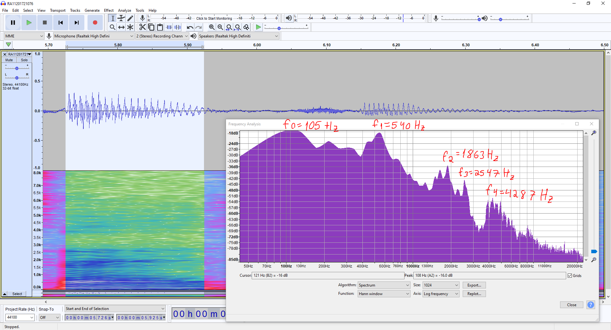
7. Quais as diferenças entre as excitações surda e sonora? E o que são as consoantes? Registre trechos no arquivo 1.d anterior para trechos sonoros, surdos e consoantes, usando ou forma de onda ou espectrograma, indicando qual fonema está destacando(*).
Realizei a marcação de alguns fonemas por meio do espectrograma, utilizando o seguinte trecho do Burrinho Pedrês:
"Folgado, Sete-de-Ouros endireitou para a coberta. Farejou o cocho. Achou milho."
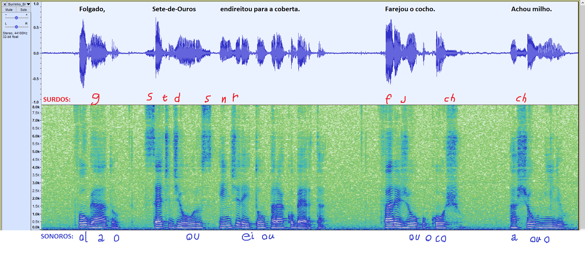
8. O que são os fonemas plosivos? No arquivo 1.e anterior, encontre-os através do espectrograma e da forma de onda e registre nas figuras qual fonema destacou (*).
Fonemas plosivos: Característica de som produzido pelo bloqueio total e momentâneo da corrente de ar em algum lugar da boca. Exemplos: /p/, /t/, /k/. /b/, /d/ e /g/.Fonte.
De acordo com a definição acima, antes de analisar o espectrograma, pode-se concluir que os fonemas plosivos deverão ser:
“CamPos Bem avenTuraDos,
Tornai-vos aGora TrisTes,
Que os Dias em Que me visTes aleGre,
já são PassaDos”
Agora, analisando o espectrograma:
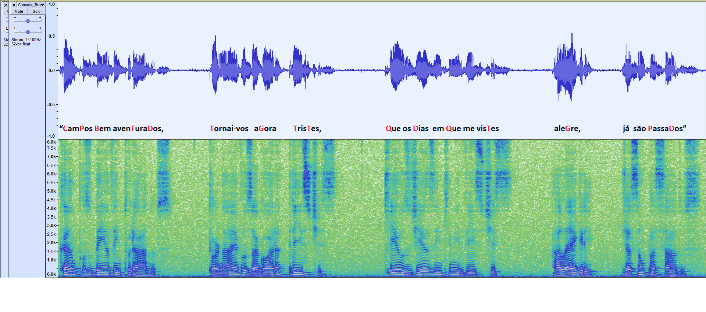
Na palavra "CamPos":
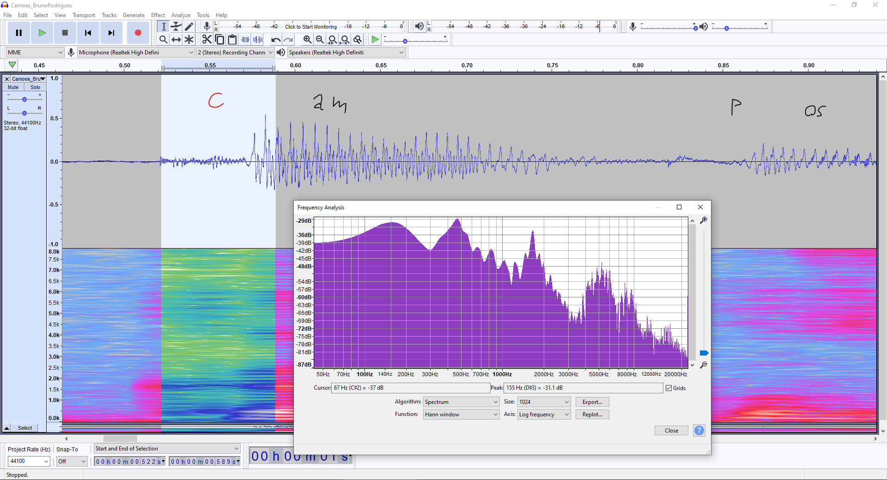
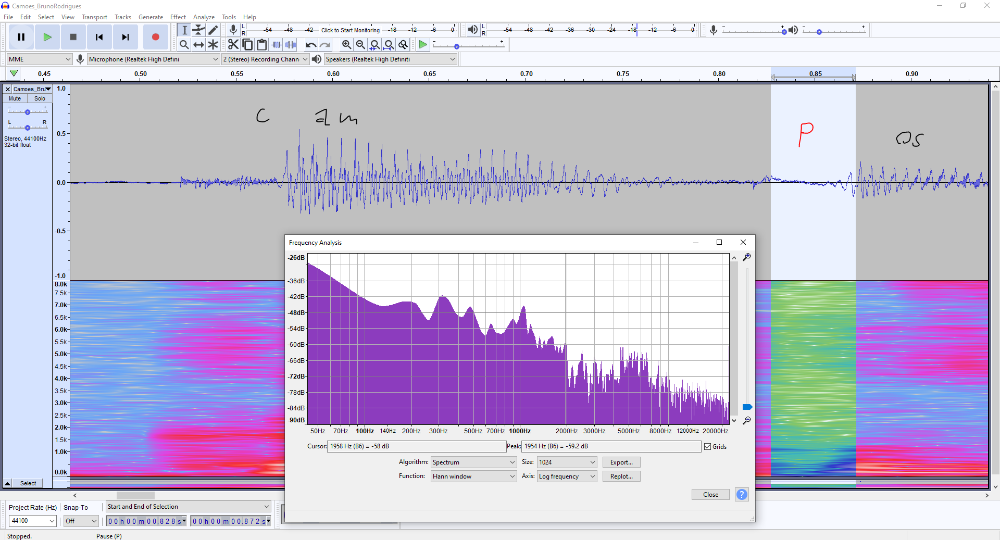